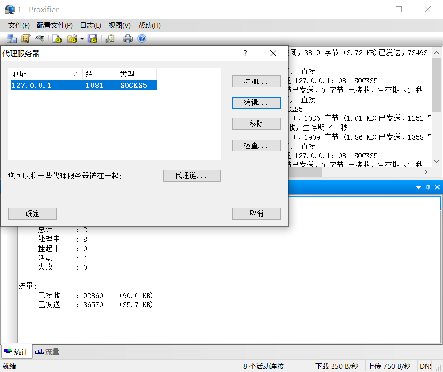

对我而言，vrchat这游戏的网络连接一直是个玄学问题。
首先，这个可能和个人网络环境有很大的关系。
有人说：这游戏不需要翻墙的。
有人说：我挂一个Golink加速器快到飞起。
而我不行o_o ….
在这里说说我使用方法.
使用代理过程
挂载VPN
这是第一步,首先是要有个VPN连接,一般也就是SSR.在这里我没有怎么用买的VPN来尝试连接游戏,而是用的租用服务器后搭建的。这样应该要稳定些。
一般情况下,即使在代理规则此处设置了”全局”.系统代理模式选择了”全局模式”.也只是支持浏览器,而对于其他需要联网的应用程序例如百度网盘QQ之类的,仍然不是走的VPN，如图。
代理软件
我所知道的有两种方案。一种是Proxifier，另一种是SocksCap64都可查到的。
首先对VPN进行本地代理设置。
左下角的本地端口也就是需要用到的，推荐改改避免冲突。两者软件设置大同小异。
在不使用代理软件的前提下，有许多软件都可以自己设置代理，例如
Proxifier
左上角配置文件——代理服务器。

添加。地址因为是本地，为127.0.0.1，端口就是前面提到的。
接着是配置文件——代理规则。
比较重要的就是为了避免冲突，如果软件尝试访问代理或者是SSR尝试运行，就是direct。其他就是按着预设规则，也就是进行代理。
还有一点就是在配置文件——名称解析。
这儿将第二项”通过代理解析主机名称“打开。
其实理论上现在应该就能全局代理了.例如
在没有启用应用内代理的前提下实现代理。
SocksCap64
设置方法类似。在代理处设置代理服务器。
在配置处设置剩余部分。
相比Proxifier，这个是将软件添加到列表再运行。
使用效果
总的来说，这种方式游戏的延迟取决于你与VPN之间的延迟。像我这样。高ping战士。450ping+。一般是听不清人说话的。会断断续续的。
吐槽
还是那句话，连接这个游戏对我来说真是个玄学。
当我用加速器，要么游戏都进不了和没用一样，要么就是地图加载奇慢无比20k/s。
相比之下玩英雄联盟美服时200左右ping，还是能玩的，而这游戏什么情况？
(￣ε(#￣)☆╰╮o(￣皿￣///)
不过总的来说，不掉线就行…